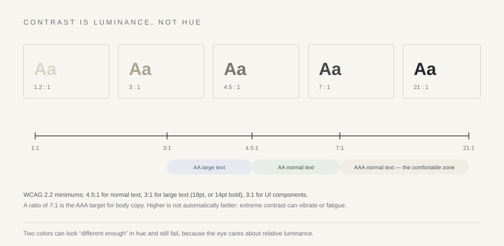

Chapter 04第四章
Color, Contrast, and Consequence颜色、对比与后果
Color is not a property of pixels; it is a transaction between light, eye, and brain. This chapter covers the physiology of color, the arithmetic of contrast, and the consequences for accessibility and action. 颜色不是像素的属性；它是光、眼睛与大脑之间的一场交易。本章讨论颜色的生理机制、对比度的算术，以及它对可访问性与行动的影响。
Color is constructed by the brain from three cone signals and a lot of context. Contrast is a luminance relationship, not a hue difference. Never encode meaning by color alone. Accessibility is not a constraint added at the end; it is the stress test that reveals whether the visual system was designed for actual eyes. 颜色是大脑根据三种视锥信号与大量情境建构出来的。对比是一种亮度关系，而不是色相差异。永远不要只靠颜色编码意义。可访问性不是最后附加的约束，而是一场压力测试，检验这套视觉设计是否真的为真实的眼睛而做。
Three cones, four primaries三种视锥，四种原色
Human color vision begins with three types of cone, sensitive to short, medium, and long wavelengths. Their relative responses are compared, not read out directly. The result is a set of opponent channels: red versus green, blue versus yellow, light versus dark. 人类色觉始于三种视锥细胞，分别对短、中、长波敏感。视觉系统比较它们的相对反应，而不是直接读取绝对值。结果是一组对立通道：红与绿、蓝与黄、明与暗。
This is why there is no “red” in the world, only reflectance and illumination. A tomato in sunlight and a tomato in shadow reflect different wavelengths to your eye, yet you see the same tomato. Color constancy is the brain subtracting the light. 这就是为什么世界上并没有“红色”，只有反射率与照明。阳光下的番茄与阴影中的番茄，反射到你眼里的波长并不相同，但你看到的是同一个番茄。颜色恒常性，就是大脑把照明“减掉”的结果。
The practical consequence is that color is relational. A gray text on a dark background can look blue; a red button can look orange next to a warmer red. You cannot specify a color in isolation and expect it to behave the same way in every context. 实际的后果是：颜色是关系性的。深色背景上的灰字可能看起来发蓝；红色按钮放在更暖的红色旁边可能显得发橙。你不能孤立地指定一种颜色，然后期待它在所有情境中表现一致。
Contrast is a relationship对比是一种关系
Contrast ratio compares the relative luminance of two colors. WCAG 2.2 sets the minimum at 4.5:1 for normal text and 3:1 for large text (18 pt, or 14 pt bold). AAA raises those to 7:1 and 4.5:1. Non-text interface components need 3:1 against their surroundings. 对比度比较的是两种颜色的相对亮度。WCAG 2.2 规定，正文最低为 4.5:1，大字号（18 pt，或 14 pt 粗体）为 3:1。AAA 级则提高到 7:1 与 4.5:1。非文字的界面组件与其周围环境之间需要达到 3:1。
The arithmetic is simple but unforgiving. Two colors can look vividly different in hue and still fail, because the eye's sensitivity is dominated by luminance. Saturated blue on black is a classic failure: rich to look at, hard to read. 算术很简单，却不留情面。两种颜色可能在色相上差异鲜明，却仍然不合格，因为眼睛的敏感度主要由亮度决定。黑底上的高饱和蓝是经典反例：看起来浓郁，读起来困难。
Dark mode does not solve contrast; it inverts the problem. Pure white on pure black can produce halation for readers with astigmatism, and thin light text on dark backgrounds can appear to bloom. Off-white on near-black is usually kinder. 深色模式并不“解决”对比问题，它只是把问题翻转过来。纯白配纯黑，可能让散光读者感到光晕；深色背景上的细字则可能显得发胀。近黑底配米白字，通常更温和。

Tool · Contrast checker工具 · 对比度检查器
WCAG 2.2 thresholds, calculated locally.按 WCAG 2.2 阈值本地计算。#23262a
#f7f5ef
Color as code颜色作为编码
Color is an efficient code because it can be read in parallel with shape and position. But it is a code with a narrow alphabet and a cultural dialect. Red means error in many interfaces, celebration in many cultures, and “up” in some stock markets and “down” in others. 颜色是一种高效的编码，因为它可以与形状、位置并行读取。但它的字母表很窄，而且带有文化方言。红色在许多界面里表示错误，在许多文化中表示喜庆，在一些股市里表示上涨，在另一些里表示下跌。
Roughly one in twelve men of Northern European descent has some form of red–green color vision deficiency; the rate is much lower in women. If a chart distinguishes categories only by red and green, a meaningful fraction of the audience cannot decode it. Add labels, shapes, or position. 在北欧血统的男性中，大约每十二人就有一人存在某种红绿色觉缺陷；女性的比例低得多。如果一张图只用红绿区分类别，那么相当一部分受众无法解码。请增加标签、形状或位置编码。
Color also creates emphasis. The isolation effect applies: a single colored element among neutral ones draws the eye. This is why “the red button converts better” is a fragile claim. The button may win because it is the only saturated object on the page, not because red has magic. 颜色还会制造强调。孤立效应在此适用：中性元素中唯一的彩色元素会吸引视线。这就是“红色按钮转化更好”这类说法脆弱的原因。按钮可能获胜，是因为它是页面上唯一的高饱和物体，而不是因为红色有魔力。
The ethics of color颜色的伦理
Color can soothe or alarm. It can make a cancel link pale and a subscription button loud. It can make a required field look optional, or an opt-out look like a warning. These are not neutral aesthetic choices when they change what people do. 颜色可以安抚，也可以恐吓。它可以让“取消”链接变得苍白，让“订阅”按钮变得响亮；可以让必填项看起来像选填，让“退出”看起来像警告。当它们改变人们的行为时，就不再是中性的审美选择。
Regulators have started to treat interface design as a consumer-protection issue. Dark patterns—including color-based obstruction—are increasingly named in enforcement actions and in legislation such as the EU's Digital Services Act. The direction is clear: the visual system is not a free playground. 监管者已开始把界面设计视为消费者保护问题。包括利用颜色制造阻碍在内的“暗黑模式”，越来越多地出现在执法行动与立法文本中，例如欧盟的《数字服务法》。方向很明确：视觉系统不是可以随意操弄的游乐场。
A practical protocol一套实用流程
Five checks catch most color failures. Measure contrast on the actual text sizes you ship. View the page in grayscale. Simulate the common forms of color vision deficiency. Look at it outdoors, on a low-quality screen. And test at 200% zoom, where layout and contrast often break together. 五项检查可以抓住大多数颜色问题。用实际发布的字号测量对比度；把页面转成灰度查看；模拟常见的色觉缺陷；在户外、低质量屏幕上观看；并在 200% 缩放下测试——版式与对比度往往会在那里一起崩掉。
For palette work, perceptual color spaces such as OKLCH make it easier to change lightness without shifting hue, and to generate a scale that stays visually even. Whatever the tool, define tokens once and use them everywhere. Ad hoc color is how a system loses its grammar. 在调色板工作中，OKLCH 等感知均匀色彩空间让“改变明度而不漂移色相”更容易，也能生成视觉上更均匀的色阶。无论用什么工具，都应先定义好设计令牌，再统一使用。随手取色，正是系统丢失语法的开始。
The WCAG contrast thresholds are consensus standards informed by legibility research, not laws of nature. They are a floor: text that passes at 4.5:1 can still be unpleasant at 12 px on a glossy phone in sunlight. Conversely, some large display type can be readable below the threshold. Use the ratio as a diagnostic, then test with readers. WCAG 的对比度阈值是由可读性研究支撑的共识标准，而非自然定律。它们是下限：达到 4.5:1 的文字，在阳光下的亮面手机上以 12 px 呈现时，仍可能令人难受。反过来，一些大号展示字体低于阈值也可能可读。把比值当作诊断工具，然后用真实读者去测试。
Take three text/background pairs from a page you are working on and run them through the checker above. Then convert the page to grayscale and look again. The pair that survives both tests is the one to build the rest of the palette around. 从你正在处理的页面中取三组“文字/背景”配色，放进上面的检查器。然后把页面转成灰度，再看一遍。同时通过两项测试的那一组，可以作为整套调色板的基准。
- Color is constructed, contextual, and never absolute.颜色是建构的、依赖情境的，从来不是绝对的。
- Contrast is luminance; hue can mislead you.对比度是亮度关系；色相会误导你。
- Never encode meaning by color alone.永远不要只靠颜色来编码意义。
- Accessibility is a design constraint, not a patch.可访问性是一种设计约束，而不是事后补丁。
- W3C (2023). Web Content Accessibility Guidelines (WCAG) 2.2. W3C Recommendation.
- Conway, B. R. (2009). Color vision, cones, and color-coding in the cortex. The Neuroscientist, 15(3), 274–290.
- Palmer, S. E. (1999). Vision Science: Photons to Phenomenology. MIT Press.
- Von Restorff, H. (1933). Über die Wirkung von Bereichsbildungen im Spurenfeld. Psychologische Forschung, 18, 299–342.
- Okabe, M., & Ito, K. (2008). Color universal design (CUD): How to make figures and presentations that are friendly to colorblind people.